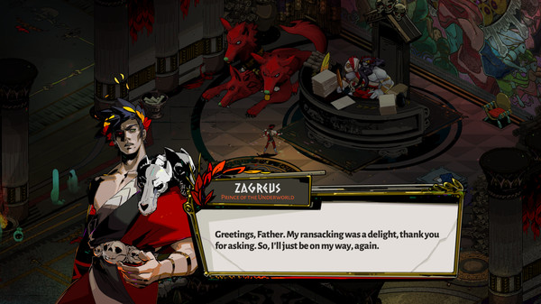

Hades
A Hades arról szól, hogy az alvilág hercege, Zagreusz megpróbál meglépni otthonából, ezért az ötletért viszont a tőle elhidegült apja, Hadész egyáltalán nem rajong. De hagyja, hadd próbálkozzon a lázadó tinédzser, gondolván, hogy úgy sem fogja tudni átverekedni magát a holtak sokemeletes lakhelyén. Mindez a játékmenetre lefordítva azt jelenti, hogy bemegyünk egy szobába, ott levágunk minden ellenállást, amely az utunkba áll, aztán megyünk tovább a következő véletlenszerűen kisorsolt (de egyébként nem random generált) terembe. A legtöbb esetben van választásunk, hogy milyen szobába szeretnénk következőnek belépni, és látjuk is előre, hogy milyen jutalom vár ránk, ha sikerül kipucolni a helyiséget. Illetve azt is, hogy nem egy főellenség akar-e a következő szobában megszeretgetni minket, tehát ezzel lehet taktikázni. Viszont korábban mentett állást nem lehet visszatölteni, és ha minden életünk elfogy, akkor mászhatunk elő Hadész családi házának vérmedencéjéből (igen, ezt akartam írni), ahol fitymáló megjegyzéssel fogad minket az alvilág egyfolytában az íróasztala mögött robotoló ura. Mi pedig kezdhetjük elölről a Prison Breaket.

A Hades-szal kapcsolatban fontos tudni, hogy ez nem roguelike, hanem roguelite, vagyis van benne meta fejlődési rendszer, méghozzá robosztus. Magyarul ez azt jelenti, hogy habár jó sokszor meg fogunk halni, mire a felszínre érünk (a harcrendszer maga nem különösebben nehéz, de nagyon kevés HP-ból kell gazdálkodni), a próbálkozásaink nem vesznek kárba, mert rengeteg olyan nyersanyagot össze lehet gyűjteni, melyekből örökre megmaradó fejlesztéseket lehet venni. Ez eleinte nem fog feltűnni, mert a Hades fokozatosan vezeti be a különféle játékmechanikai ötleteit. Igazából az a helyzet, hogy első nekifutásra a játék kifejezetten véznának tűnik, mert a harcrendszer önmagában nem éppen bonyolult. Van nálunk egy kard, amelynek van egy sima vágása (Attack), egy nagyobb, de lassabb támadása (Special), egy távolsági támadás, amihez használat után össze kell szedni a „töltényt” (Cast) és mindemellett tudunk ugrani egy rövidet (Dash).